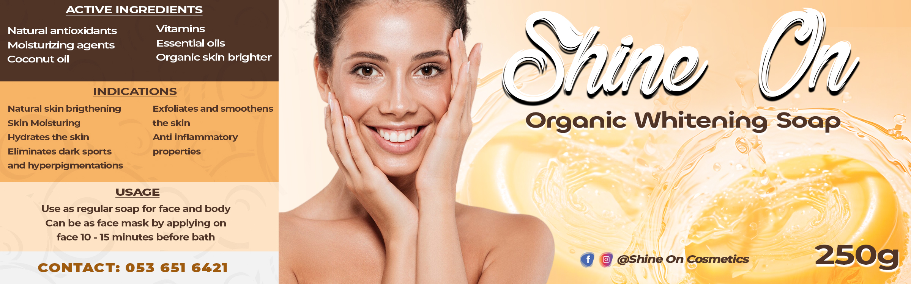

Shine On Cosmetics (S.O.C) is a entity here in Ghana charged with the responsibility of producing, packaging, selling and distributing genuine organic
Cosmetic products.
There are currently a few of our products on the market which is solely marketed and distributed by ARYNABEL ENTERPRISE.
Available products are:
Shine On Whitening cream
Shine On Whitening Soap
Shine On Caramel soap
Shine On Caramel cream
Shine On Facial cream
This is a carefully sourced and formulated skin Whitening cream, formulated with world best ingredients to give our customers maximum results and satisfaction. All ingredients sourced for these are natural and carefully and are safe to be used by all.
The cream has ingredients such as antioxidants, vitamin c, moisturizing agents and among other good agents.
The shine on Whitening cream helps brighten and lighten the skin, fades dark spots and hyperpigmentations, reduces appearance of fine lines and wrinks, fades away stretch marks, evens skin tone, hydrates and smoothens the skin, these and among other benefits.
This is a carefully sourced and formulated cream to rejuvinate your skin, clear pimples, wrinkles sun burn etc. This cream is formulated with world best ingredients to give our customers maximum results and satisfaction. All ingredients sourced for these are natural and carefully and are safe to be used by all.
The cream has ingredients such as Glycol, Distilled water, butter, oils, vegetable wax and among other good agents.
The shine on caramel cream helps rejuvinate and corrects the skin, fades dark spots and hyperpigmentations, reduces appearance of fine lines and wrinks, fades away stretch marks, evens skin tone, hydrates and smoothens the skin, these and among other benefits.
As the name suggest, Shine on organic caramel soap is carefully formulated with organic extracts such as coconut oil, caramel colorant, olive oil, natural glycerin, etc. This soap is made to remove dead cells from the body, smoothe the skin and leave you feeling refreshed.

This is our Shine On organic Whitening soap.
This is a carefully sourced and formulated skin Whitening soap, formulated with world best ingredients to give our customers maximum results and satisfaction. All ingredients sourced for these are natural and carefully and are safe to be used by all.
The shine on Whitening soap helps brighten and lighten the skin, fades dark spots and hyperpigmentations, reduces appearance of fine lines and wrinks, fades away stretch marks, evens skin tone, hydrates and smoothens the skin, these and among other benefits.
Our facial cream is made for all skin types and it is used morning and evening after bath.
This is very potent fcaial cream that protects the face from the sun, smoothens the face, clears pigments, pimples and other skin infections. It is made natural active ingredients like vitamin E extracts, propylene Glycol, white oil and other very effective ingredients to make the face smooth and beautiful.
To place an order click the "Place order here" button at the top of this page!
 This is a carefully sourced and formulated skin Whitening cream, formulated with world best ingredients to give our customers maximum results and satisfaction. All ingredients sourced for these are natural and carefully and are safe to be used by all.
This is a carefully sourced and formulated skin Whitening cream, formulated with world best ingredients to give our customers maximum results and satisfaction. All ingredients sourced for these are natural and carefully and are safe to be used by all.